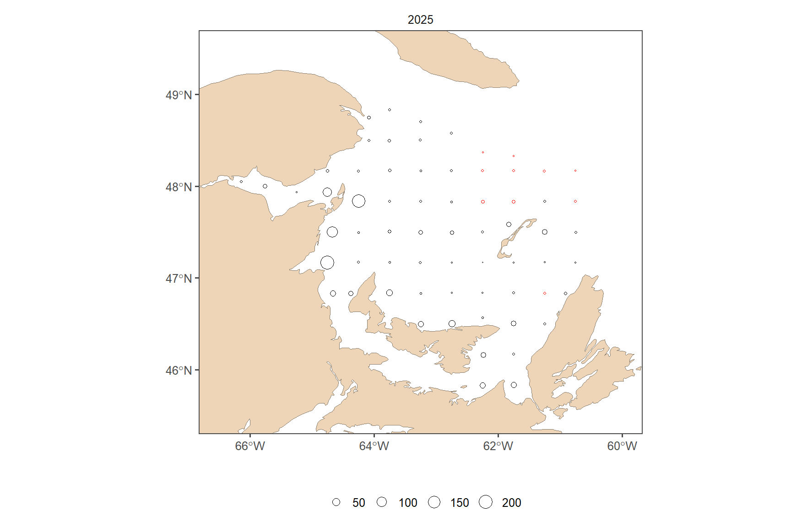
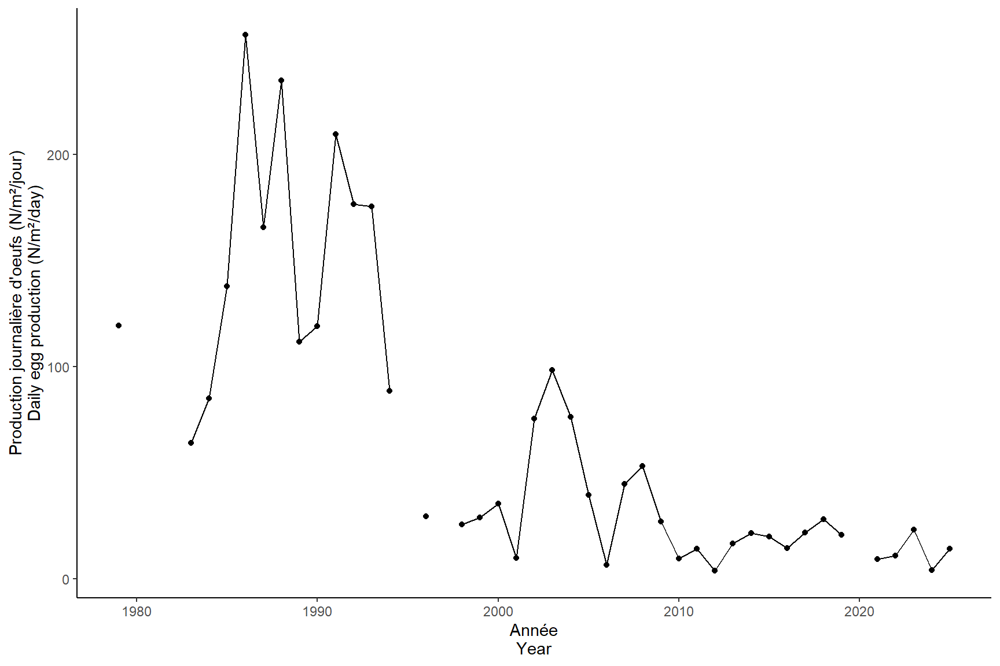

Read
2026-04-29
## Warning: le package 'knitr' a été compilé avec la version R 4.4.3##### my packages ################################################################################
## CRAN
cran.packages <- c('tidyverse','boot','magrittr','ggpmisc','ggpubr','ggthemes','mgcv','nngeo',
'fields', 'inlabru', 'sf', 'PresenceAbsence', 'verification', 'raster',
'scales', 'nlme','nls.multstart', 'stringr', 'ggforce',"readxl", "marmap")
install.this <- cran.packages[!(cran.packages %in% utils::installed.packages()[,"Package"])]
if(length(install.this)>=1) install.packages(install.this)
dummy <- lapply(cran.packages, require, character.only = TRUE)
## github
git.packages <- c('catchR','DFOdata','CCAM', 'INLA')
install.this <- git.packages[!(git.packages %in% utils::installed.packages()[,"Package"])]
if('catchR' %in% install.this) devtools::install_github("iml-assess/catchR@eli_parallel")
if('DFOdata' %in% install.this) devtools::install_github("iml-assess/DFOdata")
if('CCAM' %in% install.this) devtools::install_github("elisvb/CCAM")
if('INLA' %in% install.this)install.packages("INLA",repos=c(getOption("repos"),INLA="https://inla.r-inla-download.org/R/stable"), dep=TRUE)
dummy <- lapply(git.packages, require, character.only = TRUE)
##### source R directory ############################################################################
#invisible(sapply(list.files(pattern="[.]R$", path="R/", full.names=TRUE), source))
##### my ggplot theme ################################################################################
theme_set(theme_mackerel()) # theme_mackerel from catchR
update_geom_defaults("line", list(size = 1)) # no idea why somethimes I get fat lines otherwise
##### passwords databases #############################################################################
source("../../bdOracle.R")
source(paste0("utils/basemap.R")) #if error "plot new has not been call", restart R, package compatibility issues
source(paste0("utils/mackerel_fun_incubation.R")) # Mackerel incubation .
source(paste0("utils/spatial_projections.R"))#
source(paste0("utils/extract_biochem.R"))
source(paste0("utils/extract_T0_10.R"))
source(paste0("INLA/Mesh.R"))
source(paste0("INLA/INLA_ZAG_covar_Stations.R"))
source(paste0("INLA/INLA_ZAG_covar_Stations_CV.R"))
source(paste0("utils/nlme_boot.R"))
source(paste0("INLA/INLA_tw_covar_Stations.R"))
source(paste0("INLA/INLA_tw_covar_Stations_CV.R"))
source(paste0('INLA/plotSpatialFieldCL.R'))
source(paste0('INLA/plotSmoother.R'))
source(paste0('INLA/model_validation.R'))
source(paste0('INLA/get_prediction_grid.R'))
# load odbc library
library(ROracle)
folder <- "../biochem"
r_files <- list.files(folder, pattern = "\\.[rR]$", full.names = TRUE, recursive = TRUE)
invisible(lapply(r_files, function(f) source(f)))
log10p1_trans = function() scales::trans_new("log10p1", transform=function(x) log10(x+1), inverse=function(x) (10^x)-1)#inverse function is necessary for legend
#source(paste0("R/",year_to_report,"/INLA/getvar.R")) # needs to be retought1 DEP
1.1 INLA Mesh
###INLA mesh###
setwd(rprojroot::find_rstudio_root_file())
load(file=paste0("data/",my.year,"/eggt1.RData"))
loc_egg1 <- make_boundary(dat = eggt1, year=my.year, trajet = 1)
## Deleting source `data/2025/INLA/prediction_grid_area2025_trajet1.shp' using driver `ESRI Shapefile'
## Writing layer `prediction_grid_area2025_trajet1' to data source `data/2025/INLA/prediction_grid_area2025_trajet1.shp' using driver `ESRI Shapefile'
## Writing 1 features with 0 fields and geometry type Polygon.
make_mesh(range = 150, Loc = loc_egg1, year=my.year, trajet = 1)
## Reading layer `prediction_grid_area2025_trajet1' from data source `C:\LEHOUX\Maquereau\iml-mackerel\03.0_egg-index\data\2025\INLA\prediction_grid_area2025_trajet1.shp' using driver `ESRI Shapefile'
## Simple feature collection with 1 feature and 1 field
## Geometry type: POLYGON
## Dimension: XY
## Bounding box: xmin: 154156.8 ymin: 207793.2 xmax: 606003.4 ymax: 569285.9
## Projected CRS: NAD83 / Quebec Lambert
# prediction grid for INLA
predstation <- expand_grid(distinct(eggt1 %>% dplyr::select(year)), eggt1 %>% group_by(station) %>% dplyr::summarise(x = mean(longitude, na.rm = T), y = mean(latitude, na.rm = T)) %>% mutate(station = as.factor(station))) %>%
st_as_sf(coords=c("x", "y"), crs=4326, remove=F) %>% st_transform(lcc)
predstation<- bind_cols(predstation, st_coordinates(predstation) %>% as.data.frame() %>% dplyr::rename(X.m=X, Y.m=Y)) %>% st_drop_geometry()
saveRDS(predstation, paste0("data/",my.year,"/INLA/prediction_grid_station", my.year, ".RDS"))
1.2 Spatial field
setwd(rprojroot::find_rstudio_root_file())
if(new) INLA_ZAG(dat = eggt1, res_mesh = 150, res_pred = "station", year=my.year, Rvar = "DEP", trajet = 1)
res_mesh = 150
res_pred = "station"
myfamily = "ZAG"
minw = -10
maxw = 10
smoother = F
Rvar = "DEP"
trajet=1
name = paste0(Rvar, "_INLA_mesh", res_mesh,"km_pred_",res_pred,"_",myfamily,my.year,"_trajet",trajet)
#extract predictions#
get_prediction_grid(dir=paste0("results/",my.year,"/INLA/"), dir.out=paste0("results/",my.year,"/INLA/predictions/"),name=name, trans="")
#plot random field#
spfield<- plotSpatialFieldCL(dir=paste0("results/",my.year,"/INLA/"),name=name ,minw=minw, maxw=maxw, my.year=my.year)
annotate_figure(spfield[[1]], "Bernouilli")
annotate_figure(spfield[[2]],"Gamma")
1.3 Coefficients
setwd(rprojroot::find_rstudio_root_file())
plotSmoother(dir=paste0("results/",my.year,"/INLA/"),name=name, subfamily="binomial",smoother=smoother)
plotSmoother(dir=paste0("results/",my.year,"/INLA/"),name=name, subfamily="gamma",smoother=smoother)
fixed_effect1 <- read.delim(paste0("results/",my.year,"/INLA/fixed_effects_",name,"binomial", ".txt"))
kable(fixed_effect1, caption="fixed effect Bernoulli model")| mean | sd | X0.025quant | X0.975quant | |
|---|---|---|---|---|
| Intercept | 4.3599015 | 4.357369 | -3.931294 | 13.161261 |
| station1.1 | -0.0290114 | 4.231933 | -8.400045 | 8.194456 |
| station1.2 | -1.1266358 | 4.267413 | -9.619468 | 7.112257 |
| station1.3 | -4.6884330 | 4.400880 | -13.586304 | 3.677920 |
| station1.4 | -6.2931591 | 4.485275 | -15.415852 | 2.180250 |
| station1.5 | -6.9433002 | 4.549357 | -16.229817 | 1.618132 |
| station10.1 | 12.1237472 | 15.743335 | -15.802630 | 45.431360 |
| station11.1 | 12.1734303 | 15.692767 | -15.672016 | 45.376312 |
| station12.1 | 0.7498267 | 4.232806 | -7.556678 | 9.043093 |
| station2.1 | 1.0204634 | 4.178285 | -7.189906 | 9.196479 |
| station2.2 | 0.8852152 | 4.198229 | -7.380638 | 9.082928 |
| station2.3 | -2.0224913 | 4.311025 | -10.657413 | 6.248400 |
| station2.4 | -2.9976051 | 4.340571 | -11.722449 | 5.300423 |
| station2.5 | -4.7397538 | 4.393157 | -13.619955 | 3.613637 |
| station2.6 | -6.2901797 | 4.478951 | -15.398502 | 2.172459 |
| station3.1 | 0.2195219 | 4.229811 | -8.106497 | 8.483175 |
| station3.2 | 0.1323706 | 4.223658 | -8.190441 | 8.375949 |
| station3.3 | 1.0674373 | 4.201594 | -7.181648 | 9.297718 |
| station3.4 | -1.2503092 | 4.236983 | -9.671248 | 6.941606 |
| station3.5 | -0.1052663 | 4.224946 | -8.480904 | 8.087538 |
| station3.6 | -3.0078151 | 4.346715 | -11.748015 | 5.297952 |
| station3.7 | -3.9847994 | 4.367496 | -12.785740 | 4.343800 |
| station3.8 | -6.0241849 | 4.450439 | -15.055188 | 2.403650 |
| station3.9 | -6.4300260 | 4.486038 | -15.550870 | 2.048034 |
| station4.1 | 0.1006798 | 4.200782 | -8.182946 | 8.289809 |
| station4.2 | 0.0750967 | 4.242131 | -8.274181 | 8.368342 |
| station4.3 | 1.0163817 | 4.264693 | -7.293721 | 9.386729 |
| station4.4 | 0.8734104 | 4.197707 | -7.395778 | 9.065924 |
| station4.5 | -0.4950665 | 4.256698 | -8.959743 | 7.730179 |
| station4.6 | -2.8328689 | 4.332505 | -11.533819 | 5.456460 |
| station4.7 | -3.4697366 | 4.352064 | -12.226594 | 4.841309 |
| station4.8 | -4.7426388 | 4.397835 | -13.630247 | 3.619925 |
| station4.9 | -6.5475134 | 4.476794 | -15.645857 | 1.917091 |
| station5.1 | 12.1494271 | 16.517949 | -16.577279 | 47.220391 |
| station5.2 | -1.4406774 | 4.284084 | -9.990358 | 6.807085 |
| station5.3 | -1.2171285 | 4.281030 | -9.752671 | 7.031486 |
| station5.4 | -1.6006175 | 4.302332 | -10.201903 | 6.666233 |
| station5.5 | -2.5622606 | 4.325649 | -11.242069 | 5.721019 |
| station5.6 | -3.4881004 | 4.354833 | -12.255573 | 4.824439 |
| station5.7 | -5.1462274 | 4.408765 | -14.064258 | 3.230214 |
| station6.1 | 0.6012246 | 4.204210 | -7.675574 | 8.812188 |
| station6.2 | -0.1451027 | 4.234288 | -8.534294 | 8.068792 |
| station6.3 | -0.3909327 | 4.275975 | -8.892718 | 7.871558 |
| station6.4 | -1.7687155 | 4.305096 | -10.384024 | 6.498755 |
| station6.5 | -1.6501484 | 4.308953 | -10.276199 | 6.621004 |
| station6.6 | -1.3807908 | 4.299029 | -9.978182 | 6.879317 |
| station6.7 | -3.4090610 | 4.346805 | -12.150657 | 4.897147 |
| station6.8 | -4.8905299 | 4.438762 | -13.851275 | 3.559456 |
| station7.1 | 12.1494717 | 15.904256 | -15.967856 | 45.873006 |
| station7.2 | 12.3170571 | 15.220179 | -14.762185 | 44.544512 |
| station7.3 | 0.3881489 | 4.305057 | -8.154406 | 8.723447 |
| station7.4 | -0.2440834 | 4.286992 | -8.770902 | 8.036896 |
| station7.5 | -1.1347289 | 4.287985 | -9.692386 | 7.121140 |
| station7.6 | -2.4428124 | 4.327155 | -11.125417 | 5.844844 |
| station7.7 | -3.7865964 | 4.362165 | -12.565209 | 4.544167 |
| station8.1 | -0.4057475 | 4.227265 | -8.771190 | 7.804866 |
| station8.2 | 0.6848522 | 4.235418 | -7.670352 | 8.938192 |
| station8.3 | 1.1174983 | 4.290876 | -7.348818 | 9.475649 |
| station8.4 | 12.4039744 | 14.965862 | -14.293087 | 44.054260 |
| station8.5 | 12.3578325 | 15.099571 | -14.549298 | 44.273152 |
| station8.6 | -1.7522470 | 4.318219 | -10.401289 | 6.532952 |
| station8.7 | -2.4316072 | 4.331812 | -11.118166 | 5.869472 |
| station9.1 | -0.0754905 | 4.236430 | -8.447177 | 8.163552 |
| station9.2 | 12.1542423 | 15.894776 | -15.948678 | 45.859094 |
| station9.3 | 12.1967427 | 15.655455 | -15.558112 | 45.352013 |
| station9.4 | -0.0787219 | 4.237130 | -8.468364 | 8.146076 |
| station9.5 | 0.8502266 | 4.251519 | -7.537247 | 9.134434 |
fixed_effect2 <- read.delim(paste0("results/",my.year,"/INLA/fixed_effects_",name,"gamma", ".txt"))
kable(fixed_effect2, caption="fixed effect Gamma model")| mean | sd | X0.025quant | X0.975quant | |
|---|---|---|---|---|
| Intercept | 2.0430186 | 3.866331 | -5.538474 | 9.624510 |
| station1.1 | -0.3057156 | 3.877032 | -7.908188 | 7.296763 |
| station1.2 | -0.4637338 | 3.875681 | -8.063553 | 7.136100 |
| station1.3 | -2.0974976 | 3.884886 | -9.715367 | 5.520384 |
| station1.4 | -3.3746263 | 3.907407 | -11.036663 | 4.287414 |
| station1.5 | -4.8470803 | 3.923379 | -12.540451 | 2.846265 |
| station10.1 | 1.3806188 | 3.874361 | -6.216616 | 8.977860 |
| station11.1 | 2.4046926 | 3.876513 | -5.196759 | 10.006155 |
| station12.1 | 0.5461721 | 3.880167 | -7.062459 | 8.154788 |
| station2.1 | -0.2102380 | 3.874823 | -7.808375 | 7.387910 |
| station2.2 | -0.6997133 | 3.873925 | -8.296090 | 6.896675 |
| station2.3 | -0.9902063 | 3.874264 | -8.587251 | 6.606845 |
| station2.4 | -1.9323441 | 3.875745 | -9.532296 | 5.667605 |
| station2.5 | -2.5197487 | 3.882181 | -10.132324 | 5.092818 |
| station2.6 | -3.0674793 | 3.898743 | -10.712518 | 4.577578 |
| station3.1 | 0.8971264 | 3.877743 | -6.706734 | 8.501005 |
| station3.2 | 0.0544537 | 3.875306 | -7.544634 | 7.653548 |
| station3.3 | 0.2544848 | 3.873737 | -7.341524 | 7.850503 |
| station3.4 | -0.5988866 | 3.873109 | -8.193663 | 6.995900 |
| station3.5 | -0.8191304 | 3.872079 | -8.411893 | 6.773634 |
| station3.6 | -1.1544019 | 3.876062 | -8.754978 | 6.446167 |
| station3.7 | -1.2584439 | 3.880962 | -8.868626 | 6.351737 |
| station3.8 | -2.5393098 | 3.894814 | -10.176660 | 5.098030 |
| station3.9 | -3.9706812 | 3.905004 | -11.628018 | 3.686635 |
| station4.1 | 0.0070138 | 3.877120 | -7.595632 | 7.609665 |
| station4.2 | 0.9159826 | 3.875023 | -6.682548 | 8.514522 |
| station4.3 | 1.2500328 | 3.873247 | -6.345018 | 8.845090 |
| station4.4 | -0.3694886 | 3.872089 | -7.962267 | 7.223297 |
| station4.5 | -0.3978995 | 3.872201 | -7.990903 | 7.195100 |
| station4.6 | 0.6683075 | 3.874771 | -6.929740 | 8.266345 |
| station4.7 | -0.0793640 | 3.876211 | -7.680233 | 7.521497 |
| station4.8 | -1.4074904 | 3.882208 | -9.020122 | 6.205129 |
| station4.9 | -3.6178223 | 3.898634 | -11.262659 | 4.027009 |
| station5.1 | 0.8577402 | 3.873047 | -6.736920 | 8.452403 |
| station5.2 | 0.7346664 | 3.872662 | -6.859239 | 8.328575 |
| station5.3 | 0.5765063 | 3.872744 | -7.017563 | 8.170570 |
| station5.4 | 0.9044688 | 3.872420 | -6.688965 | 8.497899 |
| station5.5 | 1.1834583 | 3.873801 | -6.412681 | 8.779597 |
| station5.6 | -0.4676847 | 3.876949 | -8.070004 | 7.134620 |
| station5.7 | -2.2739796 | 3.882563 | -9.887305 | 5.339335 |
| station6.1 | 1.3281521 | 3.874103 | -6.268578 | 8.924885 |
| station6.2 | 0.9635137 | 3.872589 | -6.630248 | 8.557279 |
| station6.3 | 1.0932110 | 3.871992 | -6.499380 | 8.685804 |
| station6.4 | 1.3126723 | 3.872529 | -6.280974 | 8.906315 |
| station6.5 | 1.2245436 | 3.872756 | -6.369548 | 8.818633 |
| station6.6 | 0.5247971 | 3.873140 | -7.070049 | 8.119636 |
| station6.7 | -0.9953868 | 3.878478 | -8.600701 | 6.609919 |
| station6.8 | -2.1985502 | 3.914407 | -9.874321 | 5.477209 |
| station7.1 | 1.9339447 | 3.872597 | -5.659831 | 9.527728 |
| station7.2 | 1.8496242 | 3.872182 | -5.743339 | 9.442590 |
| station7.3 | 1.8065438 | 3.871903 | -5.785872 | 9.398963 |
| station7.4 | 1.7879832 | 3.872842 | -5.806277 | 9.382243 |
| station7.5 | 1.3651165 | 3.873278 | -6.229996 | 8.960231 |
| station7.6 | 0.0741041 | 3.875519 | -7.525408 | 7.673610 |
| station7.7 | -1.9976630 | 3.881671 | -9.609241 | 5.613901 |
| station8.1 | 0.2345792 | 3.874984 | -7.363878 | 7.833039 |
| station8.2 | 1.8565554 | 3.873142 | -5.738287 | 9.451407 |
| station8.3 | 2.3898111 | 3.872789 | -5.204342 | 9.983968 |
| station8.4 | 2.6218386 | 3.872578 | -4.971899 | 10.215585 |
| station8.5 | 2.0770847 | 3.872905 | -5.517295 | 9.671472 |
| station8.6 | 0.7319894 | 3.875139 | -6.866774 | 8.330751 |
| station8.7 | -0.2040736 | 3.878217 | -7.808878 | 7.400721 |
| station9.1 | 1.1543364 | 3.875899 | -6.445916 | 8.754592 |
| station9.2 | 1.5606023 | 3.873865 | -6.035661 | 9.156869 |
| station9.3 | 2.7006157 | 3.873088 | -4.894120 | 10.295363 |
| station9.4 | 1.5016528 | 3.873802 | -6.094486 | 9.097797 |
| station9.5 | 2.1726618 | 3.874027 | -5.423920 | 9.769248 |
1.4 Range
setwd(rprojroot::find_rstudio_root_file())
rbern<- myrange(dir=paste0("results/",my.year,"/INLA/"),name=name, subfamily="binomial")
kable(rbern, caption="Range for the Bernoulli model")| x |
|---|
| Kappa=1.2e-05 |
| sigmau=2.467 |
| range (km)=238.952 |
| erreur around range (km)=180.835-300.222 |
rgamma<- myrange(dir=paste0("results/",my.year,"/INLA/"),name=name, subfamily="gamma")
kable(rgamma, caption="Range for the Gamma model")| x |
|---|
| Kappa=1.43e-05 |
| sigmau=1.559 |
| range (km)=198.499 |
| erreur around range (km)=172.332-225.382 |
1.5 Validation
setwd(rprojroot::find_rstudio_root_file())
validation_ZAG(dir=paste0("results/",my.year,"/INLA/"),name=name,
rvarpos=2, varpos=5)
1.6 INLA cross-validation
setwd(rprojroot::find_rstudio_root_file())
load(file=paste0("data/",my.year,"/INLA/INLA_CV_eggdata.RData"))
#do not need to do every year.
if(new) INLA_ZAG_CV(dat = eggcv_all , res_mesh = 150, res_pred = "station", trajet = 1, year=my.year, Rvar="DEP")
# to get result use summary fitted values
load(paste0("results/",my.year,"/INLA/DEP_INLA_mesh150km_pred_station_ZAG_",my.year,"_CV_trajet1.RData"))
# Extract mean from fitted values
idb.prd <- inla.stack.index(stkallBern, "BernFit")$data
Pi <- Gbern$summary.fitted.values$mean[idb.prd] # il n'y a pas d'index pour prediction, j'ai setté à NA.
# sd.prd <- I$summary.fitted.values$sd[id.prd]
mu <- Ggamma$summary.fitted.values$mean[idb.prd]
eggcv_all$Fit <- Pi * mu
my.formula <- y ~ x # for smooth in ggplot
inlastation1 <- eggcv_all %>%
ungroup() %>%
filter(!sample_id %in% eggcv_to_fit$sample_id) %>%
dplyr::rename(inlastation = Fit) %>%
dplyr::select(sample_id, inlastation)
pcv <- full_join(eggt1 %>% dplyr::select(sample_id, year, DEP) %>% filter(sample_id %in% inlastation1$sample_id), inlastation1) %>%
ggplot(aes(x = DEP, y = inlastation)) +
geom_point() +
geom_smooth(method = "lm") +
basetheme+
stat_poly_eq(
formula = my.formula,
aes(label = paste(after_stat(eq.label), after_stat(rr.label), sep = "~~~")),
parse = TRUE, vstep = 0.08
) +geom_abline(slope=1, intercept=0, col="red", lty=2)
##attention il faut sauvegarder eggcv pour que cette figure soit reproductible.
mybreaks=c(0,10,30,100,300,1000,2000)
pcv + scale_x_continuous(name = "PJO calculées (N/m²/day) | Calculated DEP (N/m²/day)", trans = "log10p1", breaks=mybreaks) + scale_y_continuous(name = "PJO prédite (N/m²/day)\nPredicted DEP (N/m²/day)", trans = "log10p1", breaks=mybreaks)
1.7 DEP MAPs
predt1 <- read.delim(paste0(root,"results/",my.year,"/INLA/predictions/predictions_DEP_INLA_mesh150km_pred_station_ZAG", my.year, "_trajet1.txt"))
lookup <- read.delim(paste0(root,"data/lookup_station_egg.txt"))
DEPt1a <- full_join(eggt1 %>% mutate(station=as.numeric(station),
stratum=as.numeric(stratum)), left_join(predt1, lookup %>% dplyr::select(-c(depth, latitude, longitude)))) %>% mutate(DEP = coalesce(DEPbackup, Fit))
DEP <- full_join(lookup %>% dplyr::rename(lat=latitude, lon=longitude) %>% dplyr::select(station, lat, lon),
DEPt1a %>% mutate(estimated = ifelse(is.na(DEPbackup) & !is.na(DEP), "estimated", "observed"))) %>%
mutate(latitude=coalesce(latitude, lat),
longitude=coalesce(longitude,lon))
year_to_plot= my.year
basemap2 +
geom_point(data = DEP %>% filter(year %in% year_to_plot,DEP > 0), aes(x = longitude, y = latitude, size = DEP, col = estimated), shape = 21, stroke=0.5) +
geom_point(data = DEP %>% filter(year %in% year_to_plot,DEP == 0), aes(x = longitude, y = latitude), shape = 21, size=0.8, stroke=0.5) +
facet_wrap(~year) +
scale_color_manual(values = c("red", "black"), guide = "none") +
theme_few()+ theme(legend.position="bottom",
legend.key.width = unit(15, "pt"),
plot.background = element_blank())+
scale_x_continuous(breaks=seq(-66,-60,2))+
scale_size_continuous(name="",breaks=c(seq(0, ceiling(max(DEP$DEP)), 50)),range=c(0.25,5)) 
ggsave(paste0(root,"img/",my.year,"/DEP.png"), width=4, height=4, dpi=600, units="in", bg="white")
save(DEP, file=paste0(root,"data/",my.year,"/DEP.RData"))
all_years= data.frame(year=seq(1979, my.year, 1))
left_join(all_years,DEP) %>%
group_by(year) %>%
dplyr::summarize(
DEP.p = mean(DEP, na.rm = T)) %>%
ggplot(aes(x=year, y=DEP.p)) +geom_point()+geom_line() +
ylab("Production journalière d'oeufs (N/m²/jour)\nDaily egg production (N/m²/day)")+
xlab("Ann\u00E9e\nYear")
ggsave(paste0(root,"img/",my.year,"/DEP_trajet1_year.png"),width = 6, height = 4, unit = "in", dpi = 600)